1
추진현황(구글시트)
과제 입력에서 연구소가 함께 채우는 시트. 과제관리 › 가져오기 ▾ › 추진현황에서로 필요한 구분(L2)만 가져옵니다.
추진현황 시트 · 인사기록카드 · 이전 성과 엑셀을 준비해 두면, 팀장은 과제를 가져와 과제관리에서 평가 대상 · 성과등급 · 목표/성과를 넣고, 피어리뷰 · 평가하기 · 평가결과 · 면담으로 이어 갑니다.
평가할 과제는 과제 입력의 추진현황(구글시트)이나 엑셀에서 가져오고, 성과관리 데이터는 내 Google 드라이브에 저장합니다.
과제 입력에서 연구소가 함께 채우는 시트. 과제관리 › 가져오기 ▾ › 추진현황에서로 필요한 구분(L2)만 가져옵니다.
관리자는 가져오기 ▾ › 구글시트에서로 회사 과제관리 시트 링크를, 엑셀 파일에서로 추진현황 파일을 읽습니다.
데이터 백업 › Google Drive에서 Drive 연결 후 전체 데이터 저장. 다른 PC에서는 Drive에서 불러오기.
과제 입력에서 그 연도 추진현황을 불러와 저장해 둡니다(과제 입력 매뉴얼 「추진현황 시작하기」).
링크를 넣고 목록 확인 → 탭 고르기 → 열 맞추기 → L2 고르기 → 확인 · 가져오기 순서입니다.
전체 데이터 저장은 xlsx 리포트, 복원용 JSON, 보기용 구글시트를 한 번에 저장합니다. 이미 저장했으면 업데이트 또는 새 버전으로 저장을 고릅니다.
회사 e-HR에서 팀원별 종합 인사기록카드를 XLS로 받아 올리면 직급 · 입사일 · 직급 발령일 · 담당팀이 채워집니다.
ehr.osstem.com → 인사관리 → 인사기본에서 대상 팀원을 고르고 인사기록카드출력을 누릅니다.
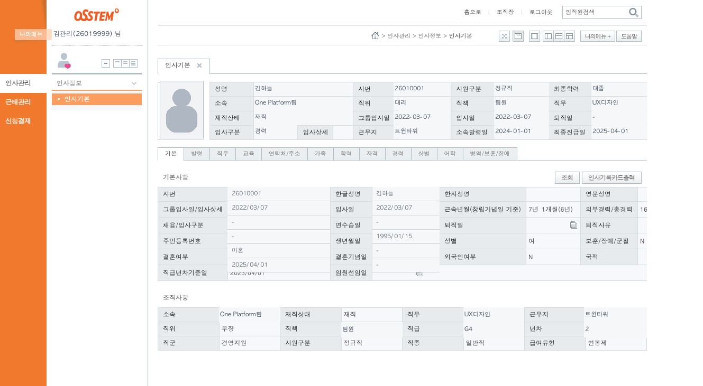
프린트 팝업 위쪽의 저장 아이콘을 누르고 초록색 XLS를 고릅니다. 팀원마다 반복해 파일을 모읍니다.
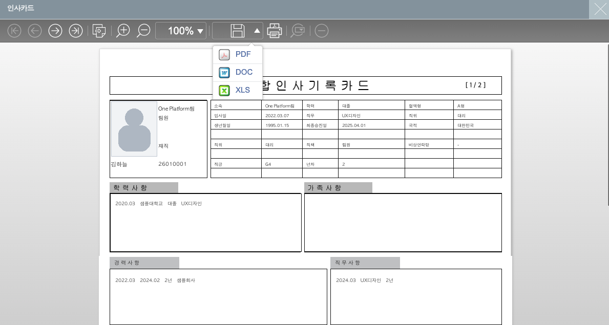
성과관리 › 팀원관리 › 팀원에서 오른쪽 위 인사기록 불러오기를 누르고, 받은 파일을 끌어다 놓습니다(.xls · .xlsx, 여러 명 한 번에).
이름이 같은 팀원과 연결해 바뀌는 값만 보여 줍니다. 적용할 사람을 체크하고 n명 적용을 누릅니다. 팀원 목록에 없는 사람은 체크하면 새로 추가됩니다.
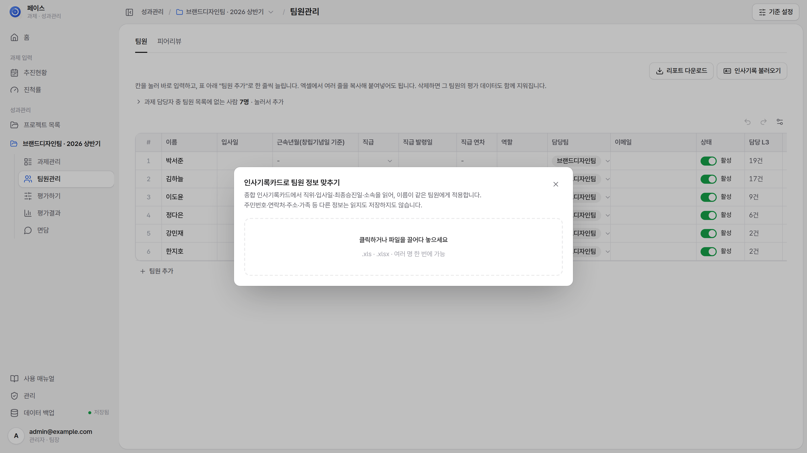
최근 5년 업적 · 역량 등급을 Excel로 한 번에 올리면 승진 시뮬레이션이 바로 계산됩니다.
회사에서 쓰던 파일 그대로. 시트 하나에 팀원 한 명(시트 이름 = 현재 직급, 예: 과장1).
데이터 백업 › 엑셀 양식으로 등록에서 받는 「이전 성과 입력 양식」. 한 시트에 모든 팀원의 연도별 줄.
면담 › 성장 시뮬레이션 표에서 연도별 등급을 바로 고를 수도 있습니다.
면담 화면 위쪽 오른쪽의 지난 성과 엑셀파일 불러오기를 누르고 파일을 끌어다 놓습니다.
파일의 이름과 똑같은 이름의 팀원에게만 연결됩니다(새 팀원은 만들지 않음). 동명이인은 목록에서 직접 고르고, 매칭 안 된 사람은 건너뜁니다.
같은 팀원 · 같은 연도의 등급은 새 파일 값으로 바뀝니다. 입사일 · 승급일 · 보조지표도 함께 적용을 켜 두면 팀원 정보에서 비어 있는 값만 채웁니다.
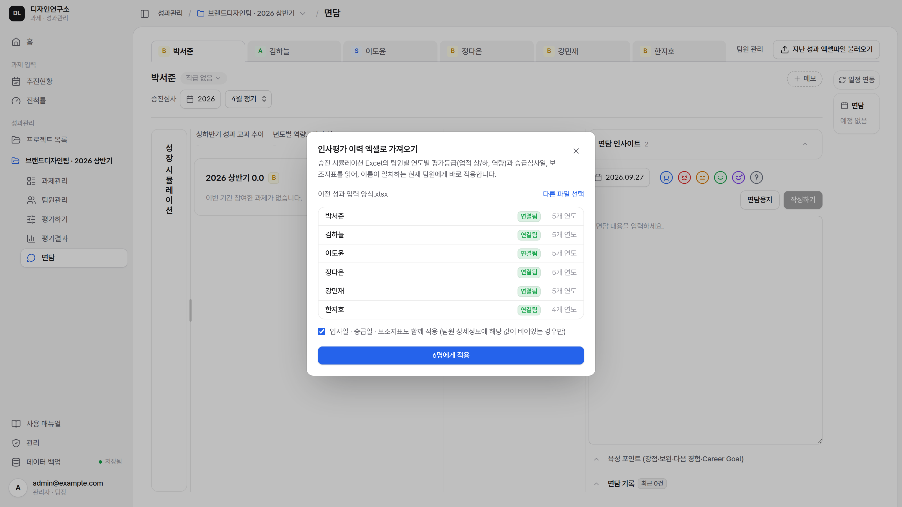
사이드바의 성과관리 › 프로젝트 목록에서 팀 · 평가기간을 고르면, 그 아래에 프로젝트 메뉴가 열립니다.
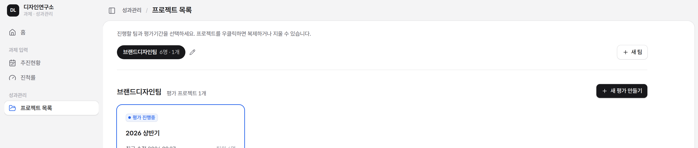
Google 계정으로 시작. 성과관리는 팀장 · 관리자 계정에만 보입니다(사이드바 계정 밑 역할).
위쪽 팀 칩(「팀 이름 n명 · n개」)으로 팀을 고르고 평가 카드를 누릅니다. + 새 팀으로 팀을, + 새 평가 만들기로 평가기간을 만듭니다. 카드를 우클릭하면 복제 · 삭제합니다.
고른 팀 칩 옆 연필을 누르거나 칩을 두 번 누릅니다. 그 팀의 모든 평가와, 담당팀이 예전 팀 이름인 팀원의 담당팀이 함께 바뀝니다.
프로젝트를 고르면 사이드바에 프로젝트 이름과 과제관리 · 팀원관리 · 평가하기 · 평가결과 · 면담이 열립니다. 위에서 아래 순서대로 진행합니다.
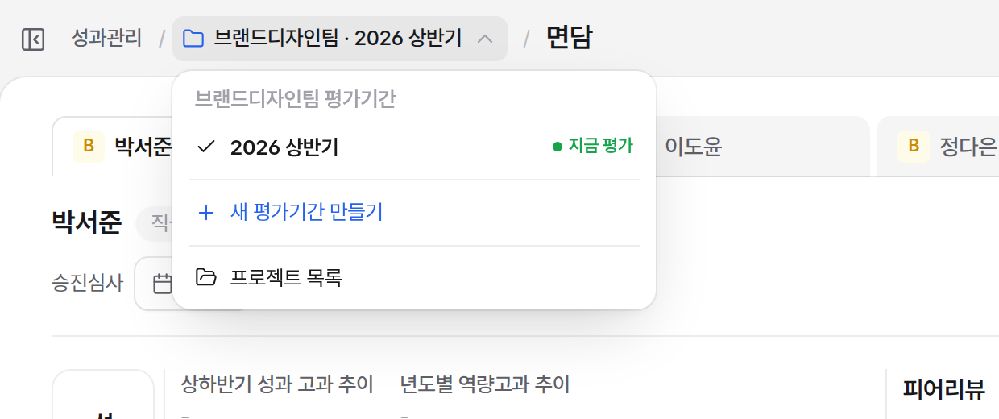
머리의 「성과관리 / 📁 팀 · 2026 상반기 ▾ / 과제관리」에서 📁를 누르면 이 팀의 평가기간 목록(지금 보는 기간은 지금 평가)이 나옵니다. + 새 평가기간 만들기와 프로젝트 목록은 프로젝트 목록으로 갑니다.
새 평가를 만들면 시작 방법을 한 번 묻습니다. 과제는 추진현황에서 필요한 구분(L2)만 가져옵니다.
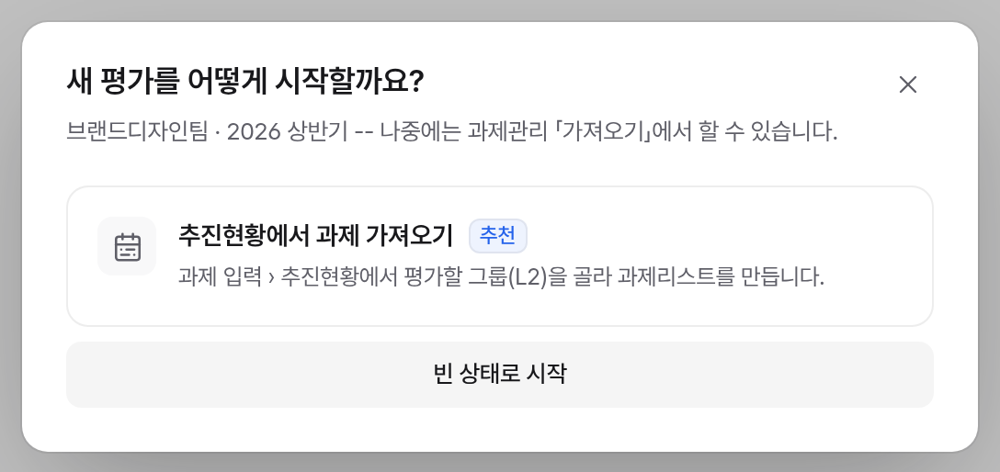
추진현황에서 과제 가져오기(추천), 이전 평가에서 이어받기(같은 팀의 다른 평가기간이 있을 때 · 과제 · 팀원 · 평가 기준을 골라 복사), 빈 상태로 시작 중에서 고릅니다. 이 창은 한 번만 뜨고, 나중에는 과제관리 「가져오기」에서 합니다.
그룹(L1) 탭을 오가며 가져올 구분(L2)을 체크하고 선택 과제 가져오기를 누릅니다.
확인 화면에서 가져오기를 누르면 L2는 과제관리의 탭이 되고, 담당자는 팀원으로 함께 추가됩니다.
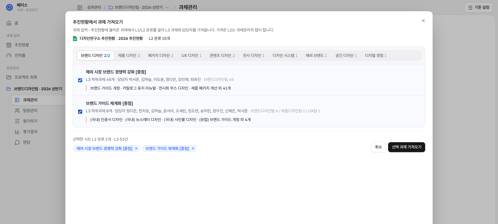
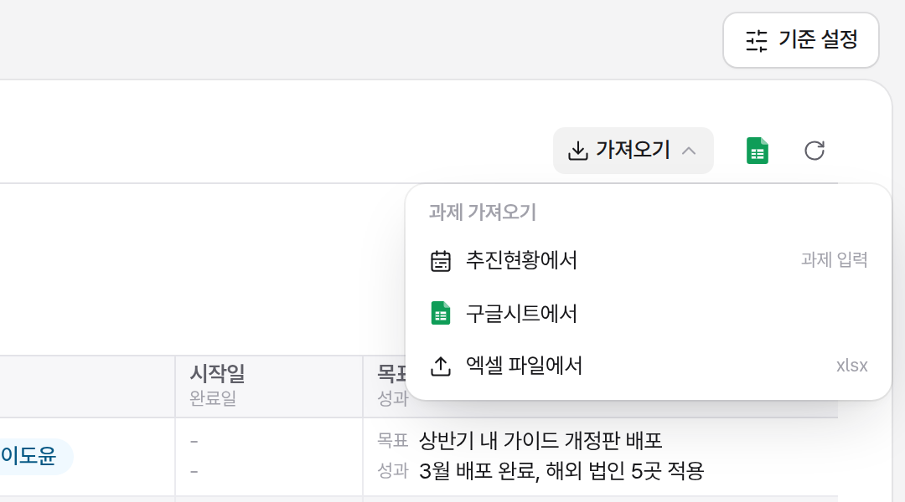
과제관리 L2 탭 줄 오른쪽 가져오기 ▾에서 추진현황에서 · 구글시트에서(관리자) · 엑셀 파일에서(관리자)를 고릅니다. 과제가 하나도 없을 때는 빈 화면의 같은 버튼과 L2 직접 만들기를 씁니다.
과제관리 표에서 평가할 과제를 체크하고, 그 줄에서 성과등급 · 목표 · 성과까지 입력합니다.
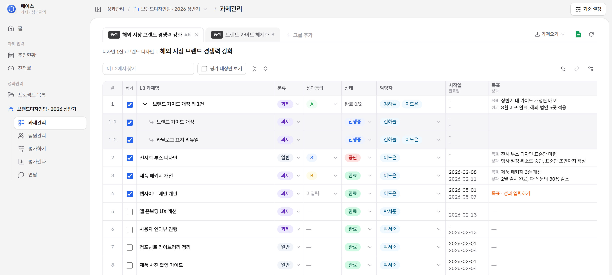
왼쪽 평가 칸을 체크하면 그 줄(또는 묶음)이 바로 평가과제가 됩니다. 분류가 비었거나 섞였으면 과제등급을 고릅니다. 체크를 끄면 평가과제에서 빠집니다(입력한 등급 · 목표가 있으면 한 번 더 묻습니다).
행을 여러 개 고르고 우클릭 평가과제로 묶기. 묶음 머리 줄이 생기고, 묶음 이름은 두 번 눌러 바꿉니다. 우클릭 묶음 풀기로 되돌립니다.
평가 대상 줄의 칩을 누르고 S · A · B · C · D를 고릅니다(다시 누르면 지움). 묶음은 머리 줄에서 매깁니다.
칸을 누르면 목표 · 성과 입력 창이 열립니다. 비어 있는 평가 대상은 주황색 목표 · 성과 입력하기로 보입니다.
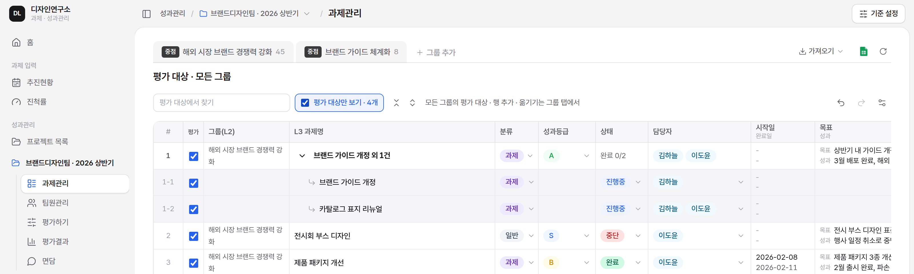
평가 대상만 보기를 체크하면(처음엔 늘 꺼져 있음) 모든 L2 탭의 평가 대상이 한 표에 모이고, 앞에 그룹(L2) 열이 붙습니다. 성과등급 · 목표/성과를 한꺼번에 매길 때 씁니다.
여기서는 행 추가 · 옮기기가 꺼집니다. 체크를 끄거나 L2 탭을 누르면 원래 표로 돌아갑니다.
팀원관리에서 팀원을 켜고 끄고, 피어리뷰는 팀원별 엑셀 양식을 나눠 주고 받아 올립니다.
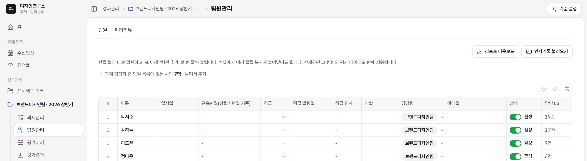
팀원관리 › 피어리뷰에서 엑셀 양식 받기를 누르면 팀원별 양식이 ZIP으로 내려받아집니다. 단순 순위(팀원 전체)와 과제별(함께한 평가과제마다) 중 고릅니다.
각자 자기 파일에 다른 팀원 순위를 1위부터 겹치지 않게 매기고, 사람마다 순위 근거를 꼭 적어 돌려줍니다.
받은 파일을 엑셀 올리기로 한꺼번에 올립니다. 순위가 겹치거나 근거가 빠진 파일은 반영하지 않고 이유를 보여 줍니다.
응답 현황 n/N명에서 누가 냈는지 보고, 못 받은 사람은 이름을 눌러 직접 입력합니다. 아래에서 평균 순위와 근거를 봅니다.
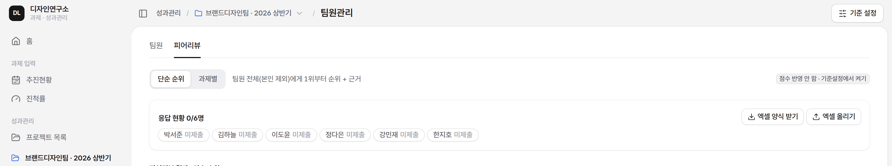
한 화면에서 팀원마다 기여도와 개인수행등급을 넣고, 합계 · 순위를 봅니다. 성과등급 · 목표 · 성과는 과제관리에서 입력합니다.
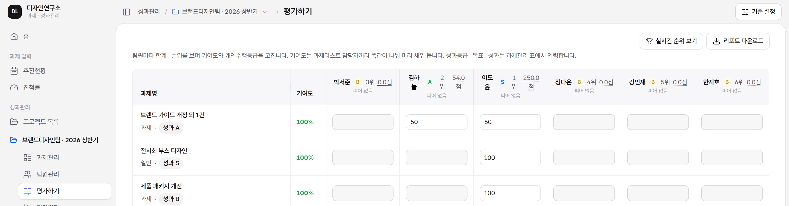
줄은 평가과제, 열은 팀원입니다. 과제명 아래에 분류와 성과등급 칩이 보이고, 아직 매기지 않았으면 주황색 성과등급 미입력입니다. 팀원 이름 옆에는 지금 등급 · 순위 · 점수가 보입니다.
과제관리 담당자끼리 똑같이 나눈 값이 미리 들어 있습니다. 칸을 고쳐 조정하고, 과제마다 합계가 100%가 아니면 빨간색으로 모자라거나 넘친 만큼을 알려 줍니다.
기준설정에서 켰을 때만 칸이 보입니다. 기여도가 0이면 고를 수 없습니다.
기준설정 가중치가 반영된 팀원별 · 과제별 성과를 보고, 리포트를 엑셀 · PDF로 받습니다.
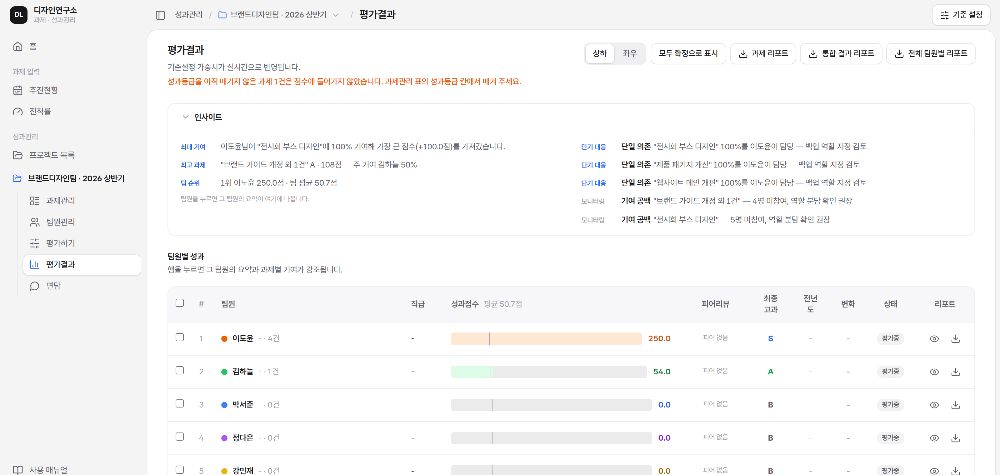
팀원별로 목표 점수 대비 지금 점수와 심사 때 기대 점수를 보고, 등급을 바꿔 보며 시뮬레이션합니다.
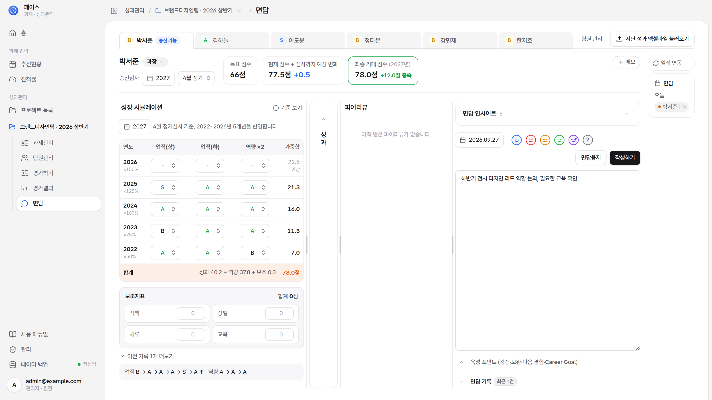
면담 화면 위 탭에서 팀원을 고릅니다. 이름 옆 직급과 승진심사(연도 · 4월 정기 / 9월 특별)를 정합니다. 심사 시기가 없으면 체류연한으로 추정합니다.
목표 점수(다음 직급 승진자격점수), 현재 점수 + 심사까지 예상 변화, 최종 기대 점수(+N점 충족 / -N점 필요)를 봅니다. 목표 이상이면 탭에 승진 가능이 붙습니다.
왼쪽 세로 막대 성장 시뮬레이션을 누르면 연도별 업적(상) · 업적(하) · 역량 표가 열립니다. 등급을 바꾸면 바로 저장되고 점수가 다시 계산됩니다. 기록이 없는 해는 평년 실적으로 채운 예상 값이 회색으로 보입니다.
표 아래 보조지표 제목 줄 오른쪽에 합계가 보이고, 그 아래 직책 · 상벌 · 체류 · 교육 네 칸(판이 넓으면 한 줄, 좁으면 2×2)에 넣은 점수가 합계에 더해집니다.
기준 보기를 누르면 직급별 체류연한 · 승진자격점수, 등급 점수, 연차별 가중치가 보입니다. 수정하기로 체류연한 · 승진자격점수 · 등급 점수를 바꿀 수 있습니다(가중치는 고정).
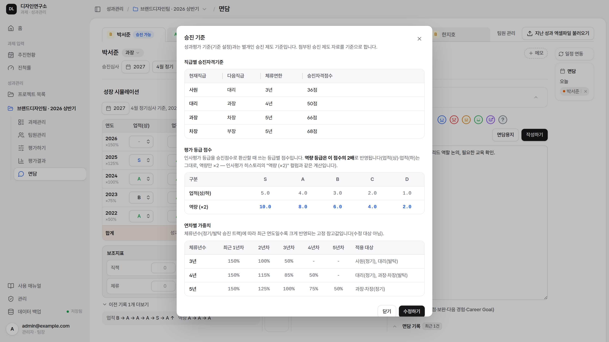
추천 질문으로 면담을 준비하고, 면담용지를 출력하고, 기록과 일정을 남깁니다.
면담 칸 위 면담 인사이트를 펼치면 성과 · 일정 · 승진 준비에서 뽑은 확인할 점과 추천 질문이 나옵니다. 문서 아이콘을 누르면 질문이 면담 내용에 들어갑니다.
면담용지를 누르고 출력할 항목(기본정보 · 성과 요약 · 인사이트 · 추천 질문 · 지난 면담 요약 · 면담 내용 영역 등)과 빈 페이지 수를 고른 뒤 인쇄합니다. PDF는 인쇄 창에서 PDF로 저장을 고릅니다.
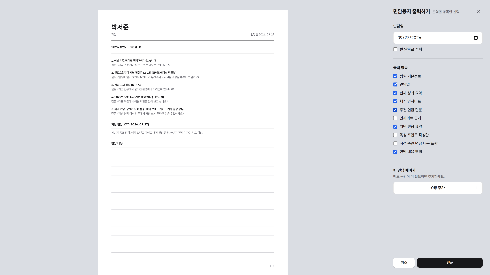
면담 일자와 분위기를 고르고 내용을 적어 작성하기를 누릅니다. 육성 포인트(강점 · 보완 필요 · 다음 도전 경험 · Career Goal)도 함께 남길 수 있습니다. 지난 기록은 면담 기록에서 고치거나 지웁니다.
오른쪽 면담 카드를 펼치면 달력에서 날짜별 면담을 보고 추가합니다. 오늘 이후 면담은 구글 캘린더 「팀명 면담」에 하루 일정으로 등록되고, 일정 연동으로 캘린더에서 바꾼 내용을 가져옵니다.
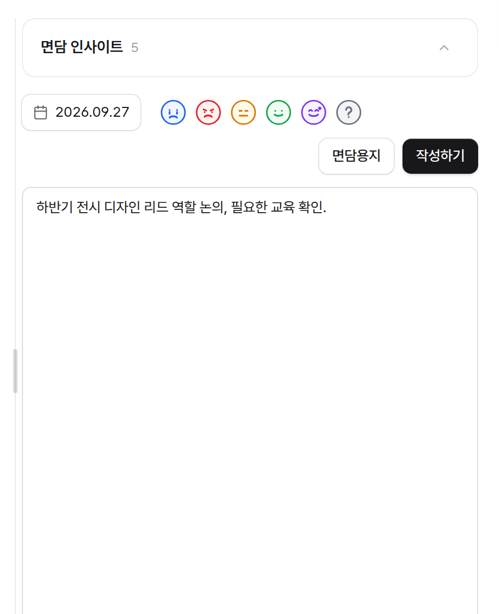
사이드바 아래 데이터 백업(프로젝트 안에서)에는 로컬 파일 · Google Drive · 엑셀 양식으로 등록 탭과 데이터 초기화가 있습니다.
로컬 파일로 백업(JSON)은 그대로 복원할 수 있는 원본, 엑셀로 백업은 사람이 보기 좋은 사본(복원용 아님)입니다. 모든 팀 · 프로젝트 데이터를 받습니다.
Drive 연결 후 전체 데이터 저장. 다른 PC에서는 Drive에서 불러오기로 이어서 씁니다.
과제 · 팀원 · 이전 성과 · 피어리뷰 입력 양식을 받아 채운 뒤, 오른쪽에 끌어다 놓으면 데이터 종류를 자동으로 구분해 한꺼번에 등록합니다.
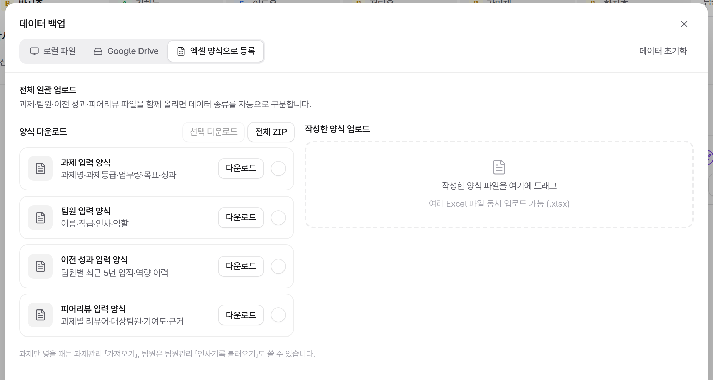
오른쪽 위 데이터 초기화에서 먼저 백업하고, 이 브라우저만 또는 Google Drive 포함 전체를 고릅니다. 되돌릴 수 없습니다.
체크하면 이 브라우저에 저장된 추진현황 · 저장 안 한 고침 · 만든 연도 · 진척률 수정값도 지웁니다. 구글시트와 연결한 시트는 그대로입니다.
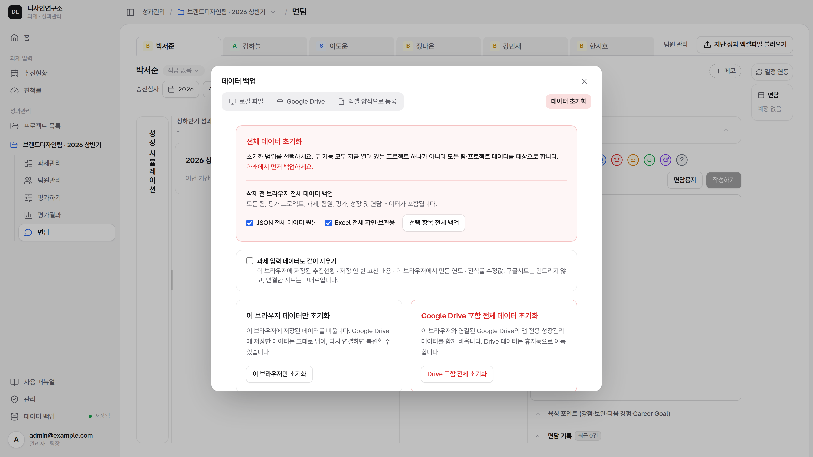
별도 설치 파일 없이 브라우저에서 바로 앱으로 설치할 수 있습니다. 설치해도 데이터와 사용 방법은 같습니다.
앱을 연 뒤 주소창 오른쪽 설치 아이콘을 누릅니다. 없으면 Chrome 메뉴 → 전송, 저장, 공유 → 페이지를 앱으로 설치.
Chrome에서 앱을 열고 오른쪽 위 ⋮ → 홈 화면에 추가 또는 앱 설치.
Safari에서 앱을 열고 공유 → 홈 화면에 추가 → 추가.
막혔을 때 먼저 확인하세요.
성과관리는 팀장 · 관리자 계정에만 보입니다. 역할은 관리자가 권한 시트의 「사용자」 탭에서 정합니다. 사이드바 계정 밑 역할이 「팀원」이면 과제 입력만 쓸 수 있습니다.
과제관리 표 왼쪽 평가 칸을 체크하면 바로 생깁니다. 여러 L3를 한 과제로 하려면 우클릭 평가과제로 묶기.
과제관리 표의 평가 대상 줄에서 넣습니다. 여러 탭을 오가기 번거로우면 평가 대상만 보기를 켜세요. 평가하기에서는 보여 주기만 합니다.
비활성 팀원이거나, 담당팀이 이 평가의 팀과 다르거나, 팀원 목록에 없는 이름입니다. 마우스를 올려 이유를 보고 팀원관리에서 고치세요.
두 영역의 데이터는 따로 저장됩니다. 초기화할 때 「과제 입력 데이터도 같이 지우기」를 체크하세요.
쓰던 PC에서 데이터 백업 › Google Drive의 전체 데이터 저장을 하고, 새 PC에서 Drive에서 불러오기를 누릅니다.
브라우저에 구글 계정이 여러 개 로그인돼 있을 때 생깁니다. 계정 골라서 다시 로그인을 눌러 계정을 직접 고르세요.
검색 결과가 없습니다.